This app has been in development since early 2017, when I started upgrading from my old DMing Excel
sheet. I created a basic app to make my DMing life a little bit
easier and more efficient. It's main function is to be a convenient place to look up rules and
monsters (SRD and homebrewed), and to keep track of initiative and HP in combat.
Since then I've added a few things, mainly tools to generate things such as treasure, NPC's and
stuff, as well as an integrated mapping tool which allows you to efficiently maintain the visual
component of running combats, usually on a projected screen or TV.
What this app does is make life easier for the lazy DM and keep the game running smoothly. It's not
a place where you should keep exstensive notes, but rather a set of convenient tools that help you
improvise things and run combat without hassle.
The app is entirely free to use and distribute non-commmercially. Some of the icons were grabbed from game-icons.net. I really hope it's of some use to
you! You can change or build upon it if you'd like. See license.
If you like you can support my work via Paypal.
If you have any feature requests or suggestions you can submit a
github issue.
Using the combat panel
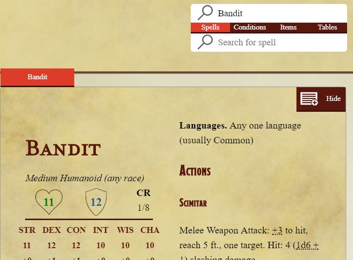
The top right searchbar (fig. 1.1) allows you to search for any monsters in the SRD, or homebrew
monsters and encounters you have created. The results will displayed in the window below.
Pressing the add button inside the displayed statblock will add the creature or encounter into the
combat panel.
The combat panel has basic combat stats of a creature, as well as a dice roller for attacks.
Pressing the creature's name will toggle a more detailed view, including a log of applied damage and
healing
Pressing the Apply button will apply damage from the leftmost field. For healing, use negative
numbers. If the creature's hit points drop to 0 or less, it will be removed from the panel.
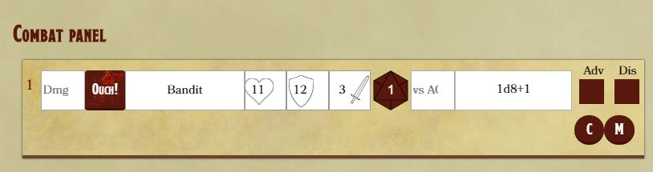
Pressing the D20 button will roll an attack for the creature, adding the current attack's modifier
to the roll result. If it equals or execeeds the value in the VS AC field, the D20 will turn green,
indicating a hit. In the case of a critical hit, the die will turn red. If the attack hits, damage
is automatically rolled (dice are doubled in the case of a crititcal hit) and displayed in the
rightmost field.
If the creature has multiple attacks, you can switch between them by pressing the leftmost field.
The clear (C) button will delete everything from the combat panel.
The Maptool (M) button will open the maptool, allowing you to add the creatures from the combat
panel to the map tool. If the creatures have tokens saved, those tokens are automatically loaded. If
a creature is killed in the maptool (by using Kill from the pawn context menu) it will be removed
from the combat panel. Likewise, if it's hit points drop to 0 or less in the combat panel, it will
be displayed as dead in the map tool.
The PC Party
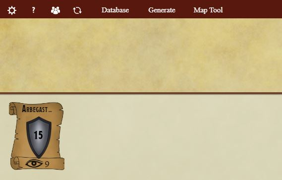
Dungeoneer can keep track of the basic information for player characters. Press the Party button in
the top left corner.
This will bring up a table where you can add, edit or remove party members.The party window has
fields for level, perception, AC and other metrics. Add a party member and mark
them as active with the checkbox. You can also choose a token for the PC here. This token will be
used in the Maptool.
A plaque with the Player Character's key metrics now appears in the main app screen. Pressing the
horizontal arrows will switch between alternative AC and regular AC (with or without a shield, for
instance). Pressing the up or down arrows
will apply a buff/debuff to armor, useful if the PC has a Shield of Faith effect for instance.
Grouping Player Characters
If you have many player characters you can add them to specific parties. Press the Party button once
again.
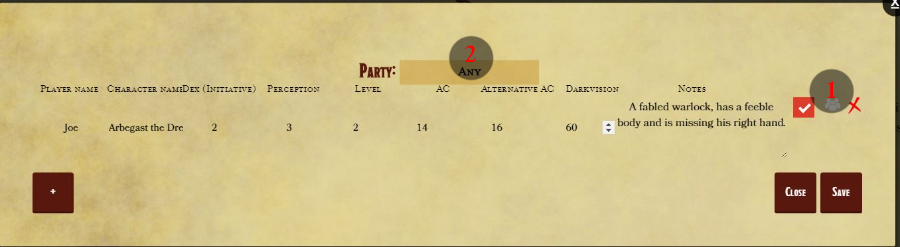
If the party icon is white, it means that the player is not assigned to any specific party.
Press it, and you will see an input field. Write the party name and press enter. This can be an
existing party or a new one. You can now filter by this party in the filter input, on top of the
table. This is useful if you DM for multiple parties.
The Tools
The main app screen has five tool panels to make your DMing life easier. Most of them can be disabled in the
"Enabled Features" setting.
Dice roller
This tool allows you to roll dice. You can add more rows to it by pressing the "+" button.
Each row has a default dice, which will be rolled if the input field is emtpy. You can write any
combination of dice into any fields, for example "3d6" or "4d6+4d8+5".
Randomizer
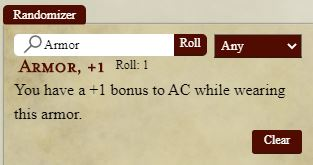
Use this to generate things or get something randomly. You can ask for a random item, roll from your
defined random tables or generate a random encounter. See for more information
Save roller
Use this tool if you need to roll a bunch of saving throws, such as when a group of bandits gets
fireballed. Enter the number of rolls to make (fig. 1), the roll DC (fig. 2) and the common modifier
to
add to the roll (fig. 3), then press the D20 button. In the two rightmost fields (fig. 4, fig. 5)
you
will see how many succeeded and how many failed. Hover over the respective fields to see which rolls
failed or succeeded.
Loot roller
Use this tool if you need to roll for some quick treasure. Enter the Challenge rating (fig. 1) and
press
roll, and the amount will be displayed in the rightmost field (fig. 2).
Initiative
The main app screen features an initiative tracker. Press either one of the Initiative buttons to
start
tracking initiative. Depending on your settings, it's either rolled automatically for all the
players or
you input their initiative score.
Manual rolling
When initative is set to manual rolling in the Settings window, a small window will appear with input
fields for all the players. Input their scores and press "Confirm". The app rolls for all individual
monsters loaded into the combat panel. If nothing is in the Combat panel, an additional input field
will appear, entitled "Monsters".
Autmoatic rolling
When initative is set to roll automatically in the Settings window, you simply press the initiative
button and the app rolls for all players and individual monsters loaded into the combat panel.
Rolling is done autmoatically for entries from the combat panel. If no entries are present in the panel, an entry named "Monsters" will be inserted, with a initiative modifer of zero.
The initiative order is sorted. Right clicking will reveal a context menu, which you can use to remove or add entries from the initiative order.
The ready action feature will place a red dot on the appropriate initiative entry. This dot will disappear in the next turn.
The initiative tracker (fig. 1) also counts the number of rounds passed. You can disable this feature
in
the intiative settings.
Generating
Encounters
You can randomly generate level appropriate encounters for your party, if you have saved the party in
the
Party window. The encounter randomizer will use the level of your currently active Player characters
to
generate encounters.
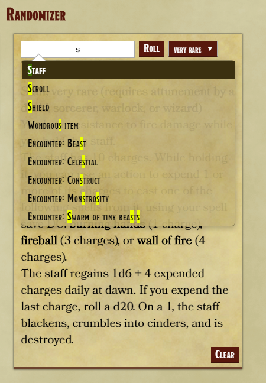
In the randomizer tool, start typing "Encounters:". A list of suggestions will then appear. You can
genearte an encounter from anything in the monster manual, or you can choose a subset based on
creature
type.
You can add more constraints, such as the approximate number of creatures in the encounter and the
approximate difficulty of the encounter. Once the encounter is generated, you can load it into the
combat panel like a normal encounter. (See )
Note that it's possible that the Encounter randomizer will not come up with anything. If that's the
case,
then the constraints are too narrow, if for example you attempt to create an easy encounter of
celestials for a level 1 party (Given that you haven't added any homebrew celestial creatures).
Encounter sets
You can create tables for special types of encounters, just like encounters based on creature type.
You might for example, create an encounter set named "Highwaymen", which would include bandits and
other humanoid NPC's.
Click the "Generate" button in the main app. This will open the Generator window. Press the
"Customize" tab and select "Encounter generation" in the dropdown menu.
You can now create a
simple table of creatures that the will be randomly chosen when generating a random encounter. Once
you save this table, you will be able to randomly generate encounters via the the Randomizer in the
main app screen. In the case of the Highwaymen example, you would type "Encounter: Highwaymen".
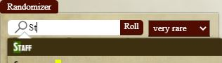
You can use this screen to edit or delete any pre-existing encounter sets, as well as add new
ones.
The dump input is to quickly generate a set from another source, such as Excel. You
can
paste from any source where entries in the set are seperated by a new line.
Random magic items
You can randomly get a magical item, weapon, armor or scroll via the randomizer. Begin writing the
type
you'd like in the Randomizer input field. You can then choose from a list of possibilites, such as
Staff, Scroll, Wand or simply Magic item (Which will include all kinds of magical items).
Press
enter or select from the list and a dropdown menu will appear next to the input field, allowing you
to
filter by rarity.
Random tables
You can create random tables to roll from using the Randomizer tool. Start by opening the Customize
tab
in the Generate window. Choose "Random Tables" from the drop down menu. Start by typing the table
name
(fig. 1), and press enter.
The dump input (fig. 2)is for quickly generating tables from another source. You can paste text into
it
and generate a random table from that. New lines represent new rows and tab characters represent new
columns. A copied table from Excel will have this format.
Each row represents one entry in the table. The title (fig. 3) and content (fig. 4) columns are
simply
textual.
The percentage (fig. 5) column represents the probability of a that entry being picked. Thus if the
first row has a percentage column of 2, and all the other rows have a precentage column of 1, the
probability of the first row being picked is double that of the others.
Note that it does
not
matter how high the numbers are in the percentage column, as they are normalized when the table is
rolled. Thus if the first row has a percentage column of 200 and the others have 100, the first row
is
still twice as likely to be picked as the others. The percentage column has a default of 1.
You can link tables together using the Roll again on column. Type the name of an existing table and
if
that entry is rolled for the Randomizer will roll again on that table. If you've already created the
table a list of autofill suggestions will pop up. Note that if you have not, you must write the
table
name correctly. If the Roll again column is filled out whatever is written in the
title and content columns will be ignored.
Shops
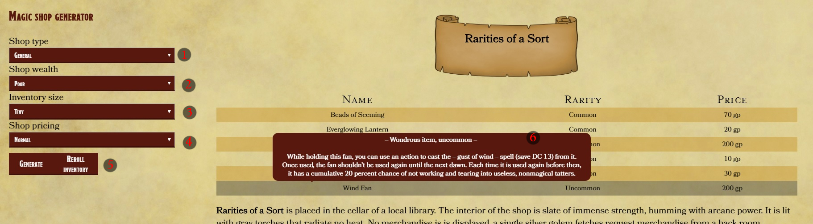
In the Shops tab of the Generator window you can randomly generate magical shops. You can generate a
shop of particular type (fig. 1), wealth level (fig. 2), size (fig. 3) and change the general
pricing of the shop's items (fig. 4).
A shop will be generated with a description, owner and inventory. If you don't like the inventory
generated you can generate another set of inventory without changing the description (fig. 5).
You can see descriptions of the items for sale by hovering over the table. (fig. 6)
Taverns
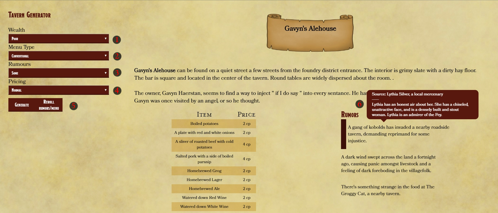
In the Taverns tab of the Generator window you can randomly generate a tavern. You can choose a wealth
level (fig. 1), a convenient or exotic menu (fig. 2), choose the amount of rumours (fig. 3) and adjust
pricing (fig. 4). A description of the tavern will generated, as well as a menu and a set of rumors.
Press the Reroll Rumors/Menu button (fig. 5) if you want to keep the name and description but
wish to reroll the menu and rumors.
Hovering over a rumor will give you a desription of the one telling the rumor.
NPC's
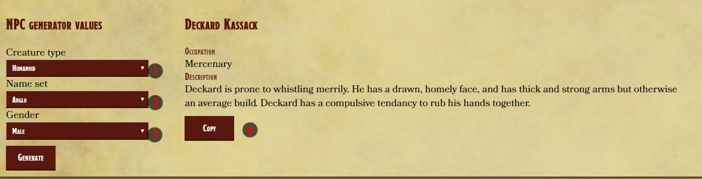
In the NPC tab of the Generator window you can randomly generate an NPC. You can choose a creature
type
, choose from a Name set and pick a gender. If you wish, you can copy the
description to the clipboard to paste into wherever it is you keep your notes. The name and creature can both be regenerated independantly from each other by pressing the appropriate regenerate button.
Adding stuff
You can add things to the database. In the Database window, accessible via the main app screen, you can
select a category (spells, items, homebrew monsters, etc) and add or delete entries to that cateogry.
Monsters/NPC
To add a homebrew monster, select the + in the top left corner of the homebrew monster list. A form
will appear where you fill out the information for the monster. Most fields are optional but
fields which are used by the Map tool (Size) and the Combat panel (Hit points, AC) should be filled
out
to avoid unpredictable behavior
Each creature is saved by name, so you cannot save two creatures with the same name. Any field
that's left empty will not be saved, if the "Amphibious" Special Ability is left blank, the creature
will not have that ability.
You can use markdown to style any of the fields.
The Challenge rating calculator gives you an estimated CR of the creature. Defensive CR is
calculated from AC and HP, but you must input predicted damage per round and main attack bonus to
calculate the offensive CR. Note this is just an estimate.
Once you save the entry, you can search for it in the main app screen and load it into the Combat
panel as with creatures from the SRD.
Encounters
You can create an encounter which can be easily loaded in the Combat panel. In the Encounters tab,
press the plus to create a new encounter.
An encounter has a name, description and creature list. The creature list has an autocomplete
feature, and if a creature with a given name is in the database the Challenge rating field will
automatically be filled out. It can also be manually changed, if the creature named is not in the
database.
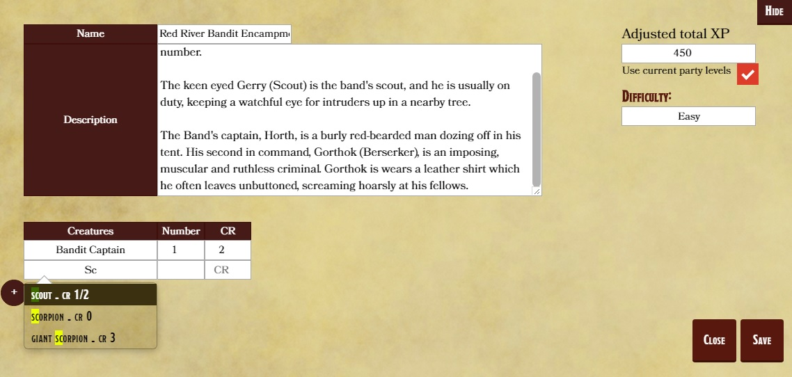
The difficulty calculator will estimate an encounter's difficulty. It either uses the levels of all
Player characters that are marked as active in the Party window of the main app screen, or you can
manually input the level and party size.
Once an encounter is saved, you can search for
it in the main app screen and load it into the combat panel to easily start the
encounter.
Other cateogries
Adding other items is straight forward. Once an entry has been added you can search for it in the
top-right side of the main-app screen.
Advanced
Dungeoneer stores all tokens and data . You can add this folder to a cloud syncing application to backup this data.